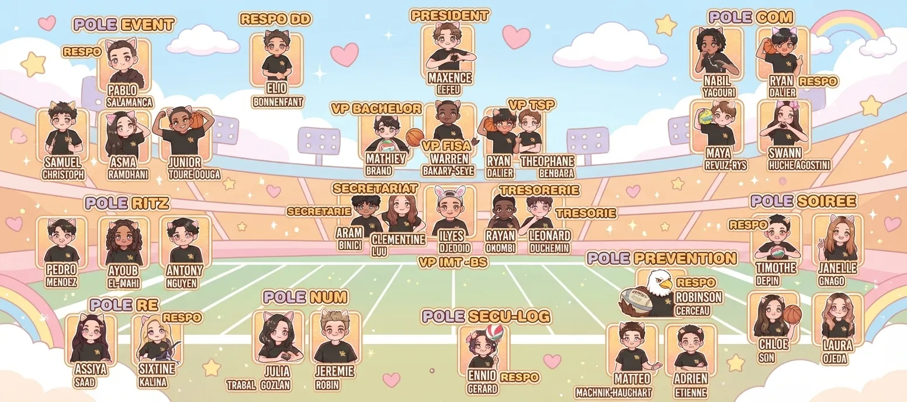
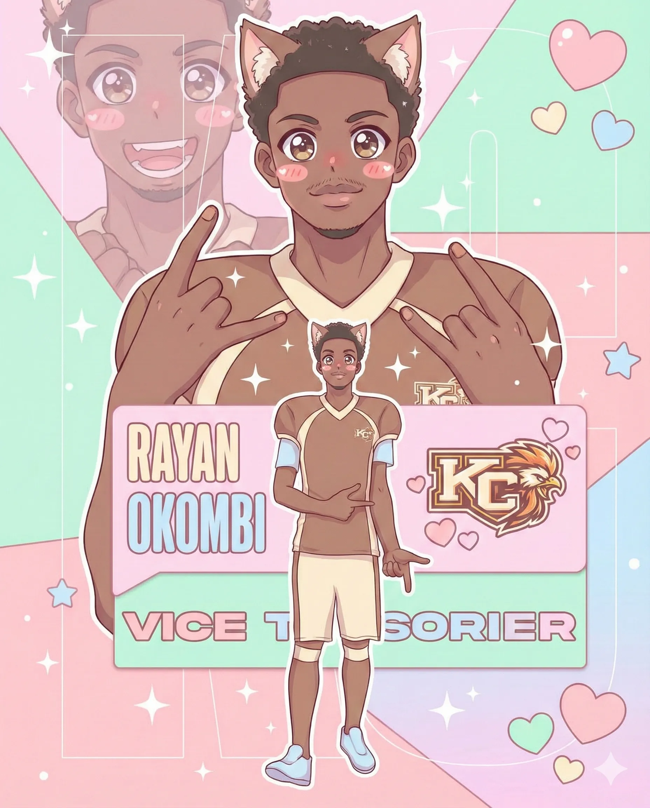
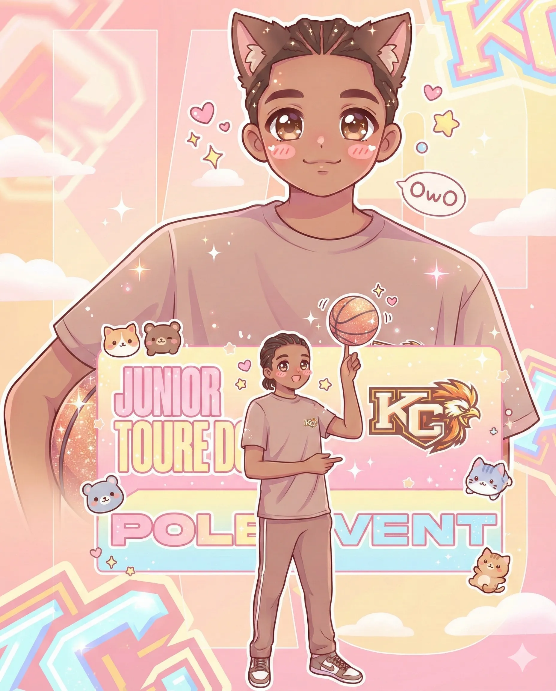
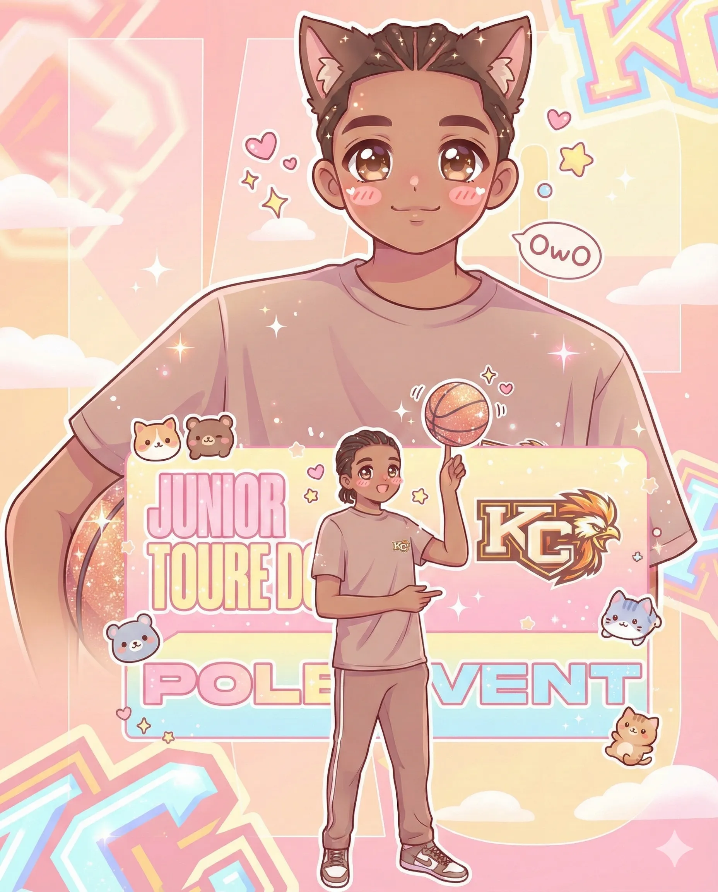
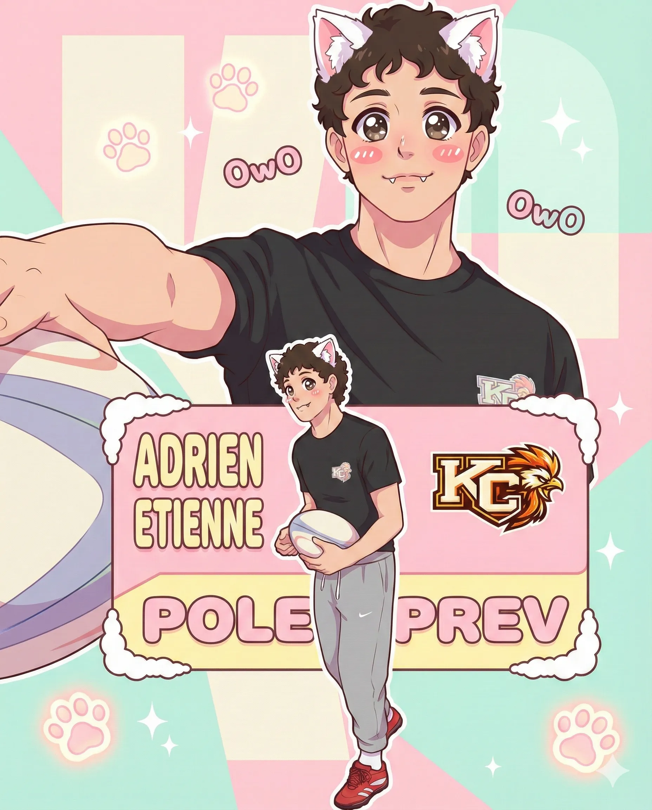
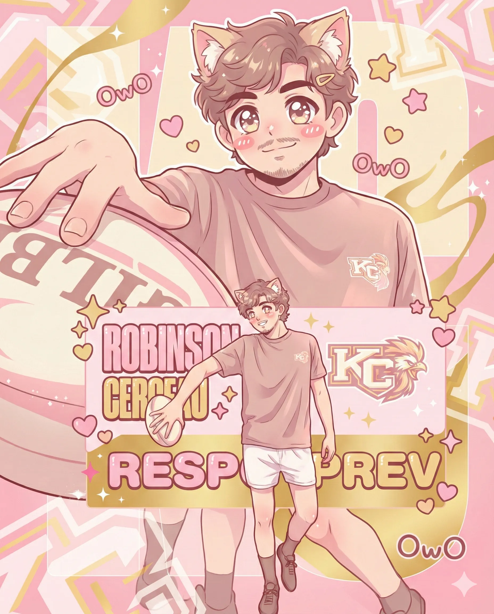
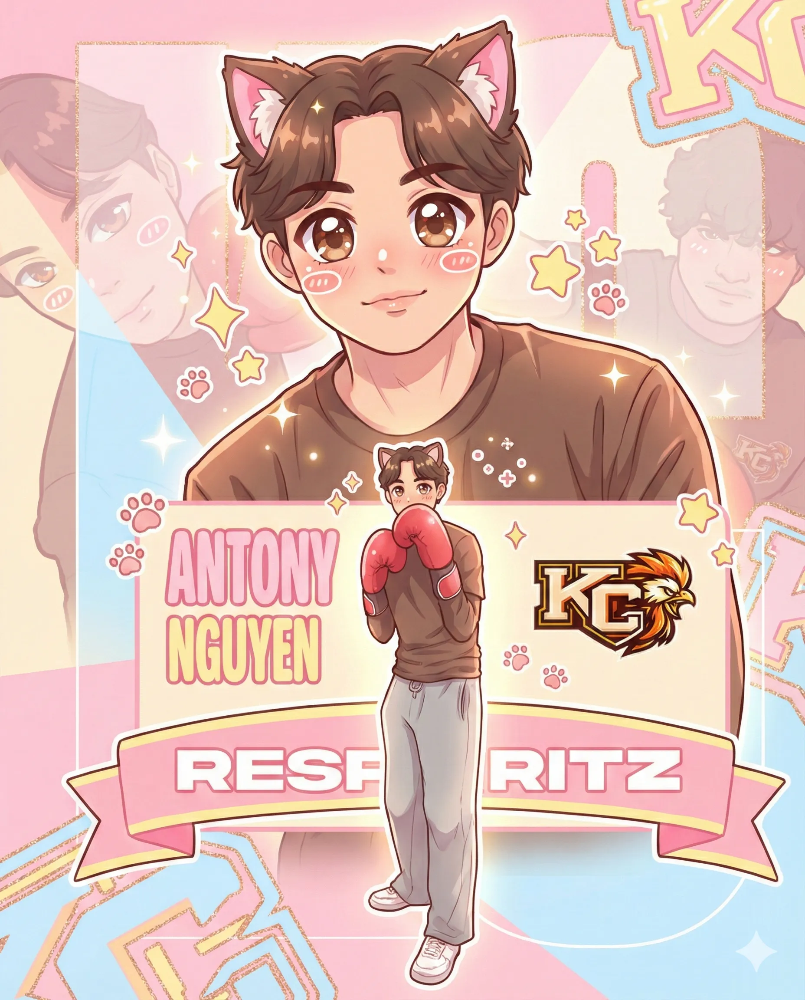
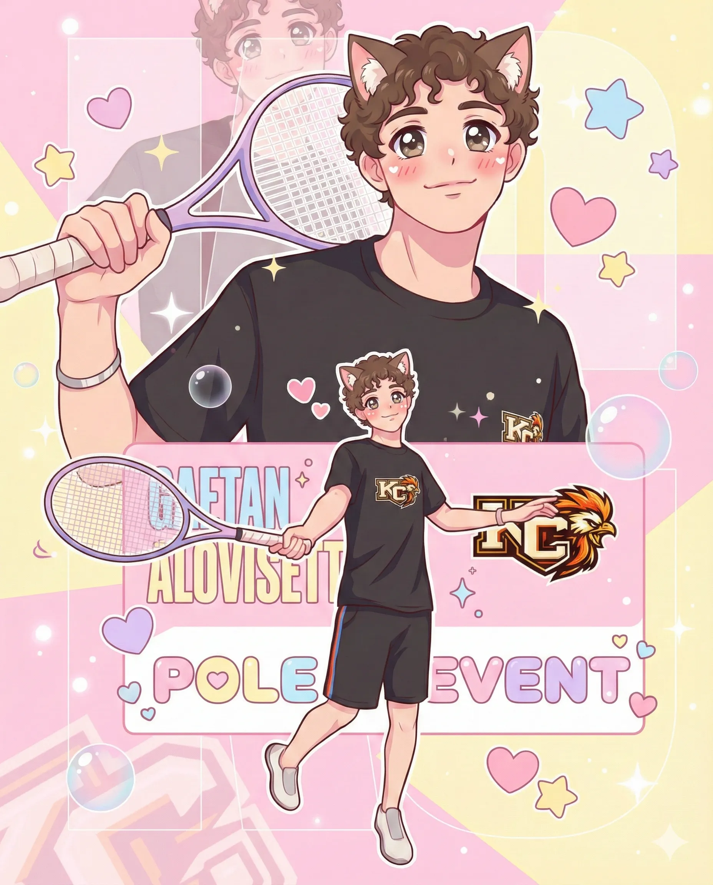
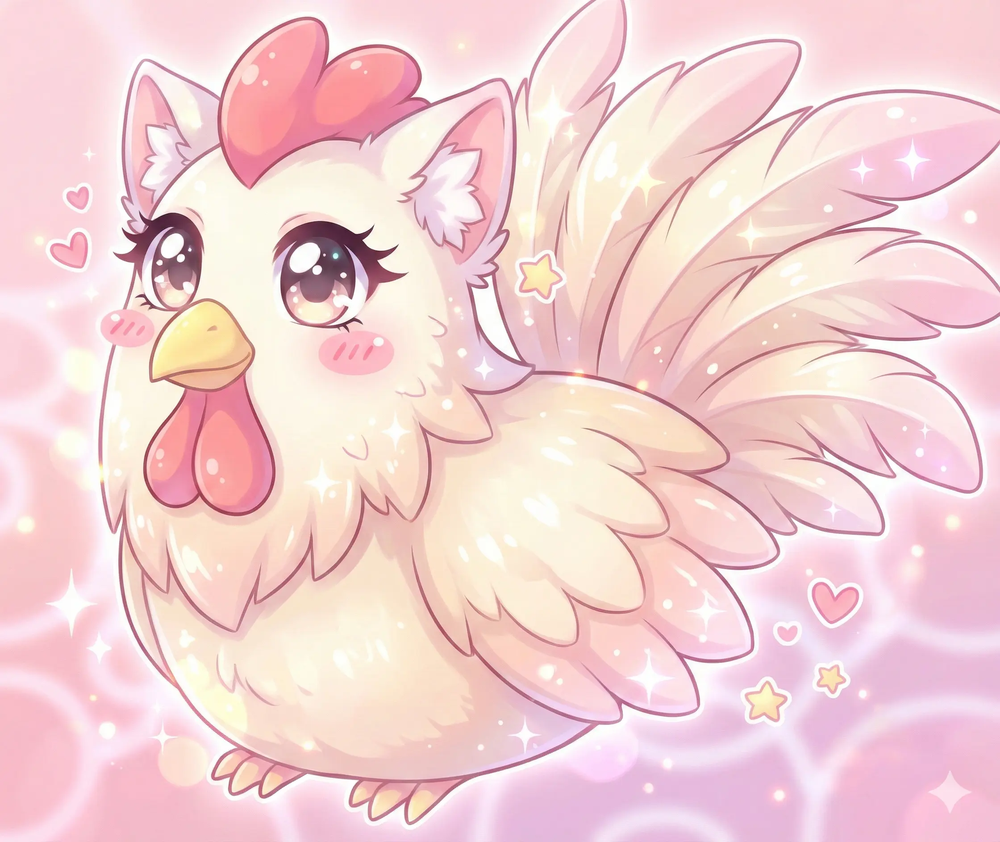
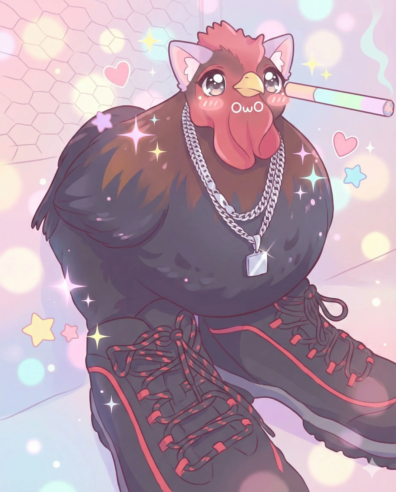

Owganisawtion owo
Vouuus voulews compwwehendre commwent fonctwionne notwe wiste ? OwO
Voici notwe owganigwamme et mon intewpwetation infowmatik de celui-ci qui mawche suw owrdinateuw, et encowe
(>w<).

×




 







